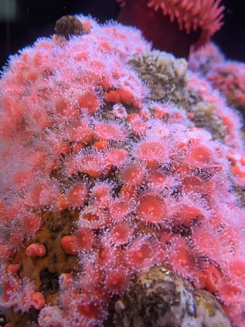
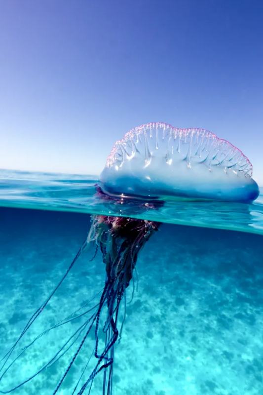

=^w^= Kat's Homepage =^w^=
Welcome!
About Me
Hello! my name is Kat (she/her, it/its). At the time of writing this, I am a student at UCSC majoring in Art and Design: Games and Playable media, and will (hopefully) be graduating in 2027. I primarily consider myself a 2D artist, though I have dabbled with 3D modeling software. I mainly focus on character design, though I do draw landscapes on occasion. Although not something I am actively studying, I am quite fond of marine biology, with marine invertebrates being one of my favorite categories of animal. Lower down on this page you can find a list of some of my favorites!
Me :3

A chosen image for my homepage
Top 10 Marine Invertebrates
- Marine Flatworm
- Predatory Tunicate
- Strawberry False Coral
- Sea Angel
- Pacific Giant Octopus
- Bullet Worm
- Portuguese Man O' War
- Blue Dragon Sea Slug
- Feather Star
- Cuttlefish





